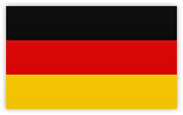
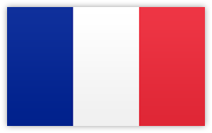

-
Premier League

-
La Liga

-
Serie A

-  Bundesliga
-

Ligue 1

Loading...
This tool predicts football match outcomes using machine learning models trained on past performance data such as form, goals scored, shots and a host of engineered features including a personally desgined ELO rating system.
The model uses a hybrid approach concatenating the final predictions from a LSTM , MLP, and XGBoost algorithm to analyse patterns and generate win/draw/loss probabilities for upcoming matches. The LSTM portion of the model handles individual match data such as shots and goals, creating sequences over the past 10 games to analyse and draw predictions from. The MLP handles team rating statistics such as the previously mentioned ELO, and a binary flag that identifies promoted teams to aid in predictions. Finally, the XGBoost algorithm analyses a team's form over a number of timeframes to try and extract further meaningful insigths for overall prediction.
Select the league to view matches from in the top left corner, this will display the upcoming matchweek from the chosen league, with predictions for each fixture shown as the likelihood of each team winning as a %. Predictions for future matchweeks can be viewed by navigating with the Matchweek navigation bar.
This model was initially devised as part of research into how accurate machine learning methods are in predicting football match outcomes. The findings were then benchmarked against the accuracy of leading UK bookmakers (with their odds used as their prediction). This particular model scored favourably in comparison with these bookmakers, achieving an overall predictive score within 1% of Bet365 and within 3% of William Hill, whilst also outperforming these bookmakers over select leagues.